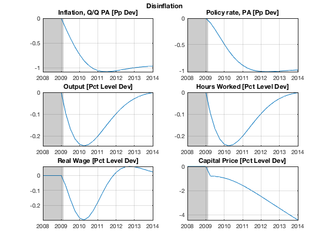
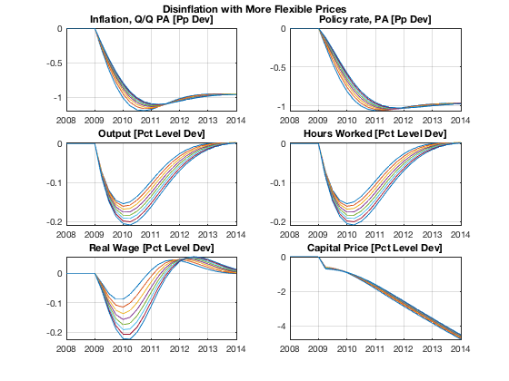
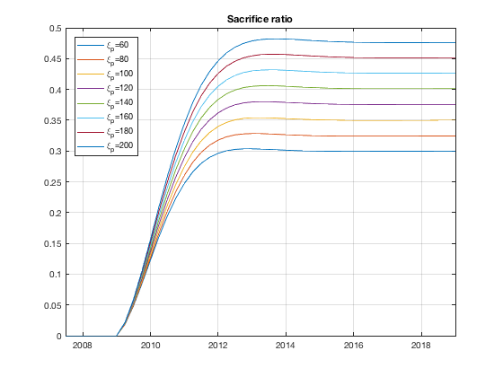

Simulate Permanent Change in Inflation Target
Simulate a permanent change in the inflation target, calculate the sacrifice ratio, and run a simple parameter sensitivity exercise using model objects with multiple parameterizations.
Contents
Clear Workspace
Clear workspace, close all graphics figures, clear command window, and check the IRIS version.
clear close all clc irisrequired 20180131 %#ok<*NASGU> %#ok<*NOPTS>
Load Solved Model Object
Load the solved model object built in read_model. Run read_model at least once before running this m-file.
load mat/read_model.mat m
Define Dates
startDate = qq(2009, 2); endDate = startDate + 39; plotRng = startDate-5 : startDate+19;
Create Model with Higher Steady State Inflation
Set the steady-state rate of inflation to 3 pct, and solve for the new steady state of nominal variables. Real variables remain unchanged, so they can be fixed here.
m1 = m; m1.pi = 1.035^(1/4); m1 = sstate(m1, ... 'Solver=', 'IRIS', ... 'Fix=', {'Y', 'N', 'A', 'RMC', 'Growth'}, 'Growth=', true); chksstate(m1, 'Equations=', 'Steady'); chksstate(m1, 'Equations=', 'Dynamic'); m1 = solve(m1); display(m1); ss = get(m, 'SteadyLevel'); ss1 = get(m1, 'SteadyLevel'); ss & ss1
Iter Fn-Count Fn-Norm Lambda Step-Size Fn-Norm-Chg Max-X-Chg Max-Jacob-Chg
norm(x,2) Hybrid Analytical
--------------------------------------------------------------------------------------------
0 1 0.0141421 NaN NaN NaN 0 NaN
1 7 6.92109e-05 0.1 1 -0.0140729 0.00243902 0.0401958
2 13 1.6362e-09 0.1 1 -6.92093e-05 1.18206e-05 0.000195753
3 19 0 0.1 1 -1.6362e-09 2.79461e-10 4.62787e-09
4 25 0 0.1 1 0 0 0
Successfully converged. Both step tolerance and function tolerance satisfied.
Iter Fn-Count Fn-Norm Lambda Step-Size Fn-Norm-Chg Max-X-Chg Max-Jacob-Chg
norm(x,2) Hybrid Analytical
--------------------------------------------------------------------------------------------
0 1 0.0261335 NaN NaN NaN 0 NaN
1 8 0.000323682 0 1 -0.0258098 0.0024569 0.264572
2 15 4.8049e-08 0 1 -0.000323634 2.9692e-05 0.00323634
3 22 0 0 1 -4.8049e-08 4.40893e-09 4.8049e-07
4 29 0 0 1 0 0 0
Successfully converged. Both step tolerance and function tolerance satisfied.
Iter Fn-Count Fn-Norm Lambda Step-Size Fn-Norm-Chg Max-X-Chg Max-Jacob-Chg
norm(x,2) Hybrid Analytical
--------------------------------------------------------------------------------------------
0 1 3.74584e-16 NaN NaN NaN 0 NaN
Successfully converged. Both step tolerance and function tolerance satisfied.
Iter Fn-Count Fn-Norm Lambda Step-Size Fn-Norm-Chg Max-X-Chg Max-Jacob-Chg
norm(x,2) Hybrid Analytical
--------------------------------------------------------------------------------------------
0 1 0.0328689 NaN NaN NaN 0 NaN
1 8 0.000209678 0 1 -0.0326593 0.00243222 0.244625
2 15 1.45345e-08 0 1 -0.000209663 1.06489e-05 0.00174739
3 22 2.36298e-15 0 1 -1.45345e-08 7.44437e-10 1.20941e-07
4 29 1.24127e-15 0 1 -1.12171e-15 1.249e-16 2.4869e-14
Successfully converged. Both step tolerance and function tolerance satisfied.
Iter Fn-Count Fn-Norm Lambda Step-Size Fn-Norm-Chg Max-X-Chg Max-Jacob-Chg
norm(x,2) Hybrid Analytical
--------------------------------------------------------------------------------------------
0 1 0.0145561 NaN NaN NaN 0 NaN
1 8 0.000180288 0 1 -0.0143758 0.0024569 0.147364
2 15 2.67629e-08 0 1 -0.000180261 2.9692e-05 0.00180261
3 22 1.88738e-15 0 1 -2.67629e-08 4.40893e-09 2.67629e-07
4 29 6.66134e-16 0 1 -1.22125e-15 3.1225e-16 2.57572e-14
Successfully converged. Both step tolerance and function tolerance satisfied.
Iter Fn-Count Fn-Norm Lambda Step-Size Fn-Norm-Chg Max-X-Chg Max-Jacob-Chg
norm(x,2) Hybrid Analytical
--------------------------------------------------------------------------------------------
0 1 0.00273358 NaN NaN NaN 0 NaN
1 8 3.811e-05 100 1 -0.00269547 0.0035648 0.0353392
2 15 3.2291e-07 1 1 -3.77871e-05 0.00355943 0.00437269
3 22 1.03511e-12 100 1 -3.22909e-07 5.36991e-06 5.05944e-06
4 29 1.57009e-16 0 1 -1.03495e-12 1.16204e-11 1.06645e-11
5 36 0 0 1 -1.57009e-16 3.33067e-15 3.10862e-15
Successfully converged. Both step tolerance and function tolerance satisfied.
Iter Fn-Count Fn-Norm Lambda Step-Size Fn-Norm-Chg Max-X-Chg Max-Jacob-Chg
norm(x,2) Hybrid Analytical
--------------------------------------------------------------------------------------------
0 1 0.00348368 NaN NaN NaN 0 NaN
1 8 4.23637e-06 100 1 -0.00347945 0.00243015 0.0246633
2 15 6.24457e-12 0 1 -4.23636e-06 2.94804e-06 2.99556e-05
3 22 3.14018e-16 0 1 -6.24426e-12 4.34553e-12 4.41531e-11
4 29 0 0 1 -3.14018e-16 2.18575e-16 3.55271e-15
Successfully converged. Both step tolerance and function tolerance satisfied.
m1 =
nonlinear model object: [1 parameter variant(s)]
number of equations: [4 16 4 0 0]
solution(s) available: [1 parameter variant(s)]
comment: 'Simple SPBC Model File'
user data: empty
export file(s): [0]
ans =
struct with fields:
Short: [7.1827 8.2284]
Infl: [2.5000 3.5000]
Growth: [3.0000 3.0000]
Wage: [5.5750 6.6050]
Y: [1.5519 1.5519]
N: [0.7470 0.7470]
W: [1.7314 1.7314]
Q: [0.8333 0.8333]
H: [1.5519 1.5519]
A: [1 1]
dA: [1.0074 1.0074]
P: [1 1]
R: [1.0175 1.0200]
Pk: [1.5312 1.5312]
Rk: [0.0517 0.0517]
Lambda: [0.6444 0.6444]
dP: [1.0062 1.0086]
d4P: [1.0250 1.0350]
dW: [1.0137 1.0161]
RMC: [0.8333 0.8333]
Mp: [0 0]
Mw: [0 0]
Ey: [0 0]
Ep: [0 0]
Ea: [0 0]
Er: [0 0]
Ew: [0 0]
alpha: [1.0074 1.0074]
beta: [0.9962 0.9962]
gamma: [0.6000 0.6000]
delta: [0.0300 0.0300]
k: [10 10]
pi: [1.0062 1.0086]
eta: [6 6]
psi: [0.2500 0.2500]
chi: [0.8500 0.8500]
xiw: [60 60]
xip: [300 300]
rhoa: [0.9000 0.9000]
rhor: [0.8500 0.8500]
kappap: [3.5000 3.5000]
kappan: [0 0]
Short_: [0 0]
Infl_: [0 0]
Growth_: [0 0]
Wage_: [0 0]
ttrend: [0 0]
std_Mp: [0 0]
std_Mw: [0 0]
std_Ey: [0.0100 0.0100]
std_Ep: [0.0100 0.0100]
std_Ea: [1.0000e-03 1.0000e-03]
std_Er: [0.0100 0.0100]
std_Ew: [0.0100 0.0100]
Simulate Disinflation
Simulate the low-inflation model, m, starting from the steady state of the high-inflation model, m1.
d1 = sstatedb(m1, startDate-3:endDate+100); s = simulate(m, d1, startDate:endDate, 'AppendPresample=', true); s = dbminuscontrol(m, s, d1); plotList = { ... ' "Inflation, Q/Q PA [Pp Dev]" dP^4 ', ... ' "Policy rate, PA [Pp Dev]" R^4 ', ... ' "Output [Pct Level Dev]" Y ', ... ' "Hours Worked [Pct Level Dev]" N ', ... ' "Real Wage [Pct Level Dev]" W/P ', ... ' "Capital Price [Pct Level Dev]" Pk', ... }; dbplot(s, plotRng, plotList, ... 'Tight=', true, 'Highlight=', startDate-5:startDate-1, ... 'Transform=', @(x) 100*(x-1)); grfun.ftitle('Disinflation');
Sacrifice Ratio
Sacrifice ratio is the cumulative output loss after a 1% PA disinflation. Divide by 4 to get an annualised figure (reported in the literature).
sacRat = -cumsum(100*(s.Y-1))/4
sacRat = Series object: 47-by-1 2007Q3: 0 2007Q4: 0 2008Q1: 0 2008Q2: 0 2008Q3: 0 2008Q4: 0 2009Q1: 0 2009Q2: 0.02419 2009Q3: 0.065988 2009Q4: 0.1193 2010Q1: 0.17882 2010Q2: 0.24018 2010Q3: 0.30001 2010Q4: 0.35586 2011Q1: 0.40616 2011Q2: 0.45003 2011Q3: 0.48718 2011Q4: 0.51777 2012Q1: 0.54225 2012Q2: 0.56128 2012Q3: 0.5756 2012Q4: 0.58598 2013Q1: 0.59317 2013Q2: 0.59785 2013Q3: 0.60063 2013Q4: 0.60199 2014Q1: 0.60237 2014Q2: 0.6021 2014Q3: 0.60141 2014Q4: 0.60052 2015Q1: 0.59954 2015Q2: 0.59858 2015Q3: 0.59769 2015Q4: 0.5969 2016Q1: 0.59624 2016Q2: 0.59569 2016Q3: 0.59526 2016Q4: 0.59493 2017Q1: 0.5947 2017Q2: 0.59454 2017Q3: 0.59444 2017Q4: 0.59438 2018Q1: 0.59436 2018Q2: 0.59437 2018Q3: 0.59439 2018Q4: 0.59443 2019Q1: 0.59446 'Output' user data: empty
Change Price and Wage Stickiness and Compare to Baseline
Create a model object with 8 parameterisations, and assign a range of values to the price stickiness parameter.
m(1:8) = m; m.xip = [60, 80, 100, 120, 140, 160, 180, 200]; m = solve(m); display(m); s = simulate(m, d1, startDate:endDate, 'AppendPresample=', true); s = dbminuscontrol(m, s, d1); dbplot(s, plotRng, plotList, 'Tight=', true, 'Transform=', @(x) 100*(x-1)); grfun.ftitle('Disinflation with More Flexible Prices'); disp('Cumulative output gap (sacrifice ratio):'); sacRat = -cumsum(100*(s.Y-1))/4; figure( ); plot(sacRat); grid('on'); title('Sacrifice ratio'); legend('\xi_p=60', '\xi_p=80', '\xi_p=100', '\xi_p=120', ... '\xi_p=140', '\xi_p=160', '\xi_p=180', '\xi_p=200', ... 'location', 'northWest'); sacRat{startDate:endDate}
m =
nonlinear model object: [8 parameter variant(s)]
number of equations: [4 16 4 0 0]
solution(s) available: [8 parameter variant(s)]
comment: 'Simple SPBC Model File'
user data: empty
export file(s): [0]
Cumulative output gap (sacrifice ratio):
ans =
Series object: 40-by-8
2009Q2: 0.01803 0.018324 0.018789 0.019322 0.019881 0.020447 0.021011 0.021567
2009Q3: 0.047905 0.048914 0.050341 0.051927 0.053567 0.055215 0.056847 0.058453
2009Q4: 0.084259 0.08645 0.089312 0.092417 0.095592 0.098761 0.10189 0.10496
2010Q1: 0.12273 0.12656 0.13127 0.13628 0.14135 0.14639 0.15135 0.1562
2010Q2: 0.16004 0.1659 0.17278 0.17998 0.18721 0.19437 0.20139 0.20825
2010Q3: 0.19395 0.20213 0.21139 0.22095 0.23051 0.23992 0.24915 0.25815
2010Q4: 0.22316 0.23381 0.24555 0.25755 0.26947 0.2812 0.29267 0.30386
2011Q1: 0.24711 0.26028 0.27448 0.28887 0.30313 0.31712 0.3308 0.34414
2011Q2: 0.26586 0.28144 0.29798 0.31465 0.33112 0.34726 0.36303 0.37842
2011Q3: 0.27984 0.29764 0.31632 0.33506 0.35356 0.37167 0.38938 0.40665
2011Q4: 0.28974 0.30948 0.33004 0.35061 0.37089 0.39076 0.41019 0.42916
2012Q1: 0.29633 0.31769 0.33983 0.36195 0.38377 0.40515 0.42607 0.44651
2012Q2: 0.30036 0.32301 0.34643 0.36983 0.39291 0.41555 0.43772 0.45941
2012Q3: 0.30253 0.32616 0.35057 0.37497 0.39905 0.42271 0.44589 0.46861
2012Q4: 0.30342 0.32776 0.35289 0.37804 0.40289 0.42733 0.45131 0.47483
2013Q1: 0.30351 0.32831 0.35394 0.37961 0.40502 0.43004 0.45462 0.47876
2013Q2: 0.30313 0.3282 0.35415 0.38017 0.40595 0.43138 0.45639 0.48097
2013Q3: 0.30253 0.32774 0.35385 0.38008 0.40609 0.43178 0.45707 0.48196
2013Q4: 0.30187 0.32712 0.35329 0.37961 0.40575 0.43158 0.45704 0.48212
2014Q1: 0.30125 0.32646 0.35263 0.37897 0.40515 0.43104 0.45658 0.48176
2014Q2: 0.30072 0.32586 0.35198 0.37828 0.40444 0.43033 0.45589 0.48111
2014Q3: 0.30029 0.32535 0.35139 0.37762 0.40373 0.42958 0.45512 0.48032
2014Q4: 0.29997 0.32494 0.35089 0.37704 0.40308 0.42887 0.45435 0.47951
2015Q1: 0.29974 0.32462 0.3505 0.37657 0.40252 0.42824 0.45365 0.47874
2015Q2: 0.29958 0.3244 0.3502 0.37619 0.40207 0.4277 0.45304 0.47807
2015Q3: 0.29949 0.32425 0.34998 0.3759 0.40171 0.42727 0.45254 0.47749
2015Q4: 0.29945 0.32416 0.34984 0.3757 0.40144 0.42694 0.45214 0.47703
2016Q1: 0.29944 0.32411 0.34975 0.37556 0.40126 0.4267 0.45184 0.47667
2016Q2: 0.29945 0.3241 0.3497 0.37548 0.40113 0.42653 0.45162 0.4764
2016Q3: 0.29947 0.3241 0.34969 0.37544 0.40106 0.42642 0.45148 0.47621
2016Q4: 0.2995 0.32412 0.34969 0.37543 0.40102 0.42636 0.45138 0.47608
2017Q1: 0.29953 0.32415 0.34971 0.37543 0.40102 0.42633 0.45134 0.47601
2017Q2: 0.29956 0.32418 0.34974 0.37545 0.40103 0.42633 0.45132 0.47597
2017Q3: 0.29959 0.32421 0.34977 0.37548 0.40105 0.42635 0.45132 0.47597
2017Q4: 0.29961 0.32423 0.34979 0.37551 0.40108 0.42637 0.45134 0.47598
2018Q1: 0.29963 0.32426 0.34982 0.37554 0.40111 0.4264 0.45137 0.476
2018Q2: 0.29964 0.32428 0.34984 0.37556 0.40114 0.42643 0.4514 0.47604
2018Q3: 0.29965 0.32429 0.34986 0.37559 0.40116 0.42646 0.45144 0.47607
2018Q4: 0.29966 0.3243 0.34988 0.37561 0.40119 0.42649 0.45147 0.4761
2019Q1: 0.29967 0.32431 0.34989 0.37562 0.40121 0.42651 0.45149 0.47613
Columns 1 through 6
'Output' 'Output' 'Output' 'Output' 'Output' 'Output'
Columns 7 through 8
'Output' 'Output'
user data: empty
  Show Variables and Objects Created in This File
whos
Name Size Bytes Class Attributes ans 40x8 3616 Series d1 1x1 49192 struct endDate 1x1 8 DateWrapper m 1x8 182429 model m1 1x1 90932 model plotList 1x6 1066 cell plotRng 1x25 200 DateWrapper s 1x1 128096 struct sacRat 47x8 4064 Series ss 1x1 9936 struct ss1 1x1 9936 struct startDate 1x1 8 DateWrapper